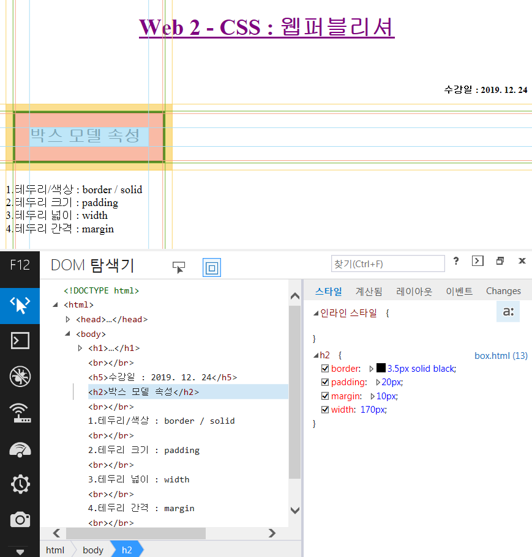

- 기본문법
- 선택자
- 속성
- BOX모델
- 그리드
- 미디어 쿼리
- 링크 태그
1.기본문법
1)style
- head 태그 아래에 style 속성, 그 안에 효과들.
- head 안에서는 대상 태그 붙은 텍스트 모두 적용, body에서 속성 붙이면 대상 텍스트에만 적용.
- 효과 뒤에는 항상 ; 붙일 것. 1개 이상의 선택자에 2개 이상 효과 붙일 때 구분.
- ex.) h1 글자크기 40, '담요'텍스트 빨간색 + 밑줄 제거
< head>
< style>
< h1 {
font size=40px;
}
< /head>
< body>
< a style="corlor:red; text-decoration:underline">
< /body>
2.선택자
- 효과를 적용 할 대상을 선택. 그룹도 가능.
1) id 선택자 : #으로 표시. 유일한 코드에만 사용. 우선순위 제일 높음.
2) class 선택자 : .으로 표시. 여러개의 코드를 그룹으로 묶음.
- ex. ) < div class="first">하나
3) tag 선택자 : 해당 태그로 표시. 우선순위 제일 낮음.
- ex.) 현재 있는 "둘" 텍스트는 빨간색, 봤던 페이지 "하나""셋""텍스트는 회색.
< head>
< style>
#active {
color:red;
}
.saw {
color:gray;
}
< /head>
< body>
< ol>
< li>< a href=1.html class="saw">하나< /a>< /li>
< li>< a href=2.html class="saw" id="active">둘< /a>< /li>
< li>< a href=3.html class="saw">셋< /a>< li>
< /ol>
< /body>
3.속성
1)글자 크기 : font-size: 0px;
2)글자 색상 : corlor: red;
3)글자 정렬 : text-align : left/right/center/justify(양쪽정렬);
4)장식 제거 : text-decoration : none;
5)코드 위치 : float:right;
4.BOX모델
1)테두리/색상 : border: 3px solid:black;
2)테두리 위치 : border-bottom/top/right/left;
3)넓이 : width: 300px;
4)크기 : padding: 20px; 안쪽. 위치 설정 가능.
5)간격 : margin: 10px; 바깥쪽. 위치 설정 가능.
5.그리드
- 반응형 디자인 : 정해진 사이즈X 화면의 크기에 따라 사이즈 조절.
1)열 : grid-template-columns
2)행 : grid-template-rows
3)300px 1fr: 1행은 300px, 2행은 나머지를 차지. 1fr 2fr도 가능. 1/3 2/3으로 표시됨.
개발자 도구
- 브라우저 > 오른쪽 마우스 > 요소/검사
- 코드가 어떤 속성의 영향을 받는지 알 수 있음.

6.미디어쿼리
- 특정 조건을 만족할 때만 코드가 반영 되도록 하는 기술
- 폰 가로모드 세로모드, 태블릿 pc등 크기가 다른 화면에서 사이트를 다르게 보이게 만들 수 있음
- 개발자도구 > 화면 크기 확인
- 최소값:min 최대값: max
ex.) 800픽셀보다 화면이 클 경우, div태그에 있는 것은 보이지 않음.
< style>
텍스트
@media(min-width:800px)
div{
display:none;
} *디스플레이 닫는 태그
} *미디어 닫는 태그
7.링크 태그
- 웹페이지와 css파일 연결하는 태그.
- head 아래 위치.
ex.)
< link rel="styleseet" href="style.css">